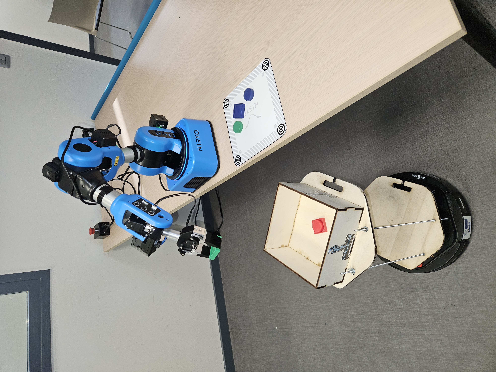
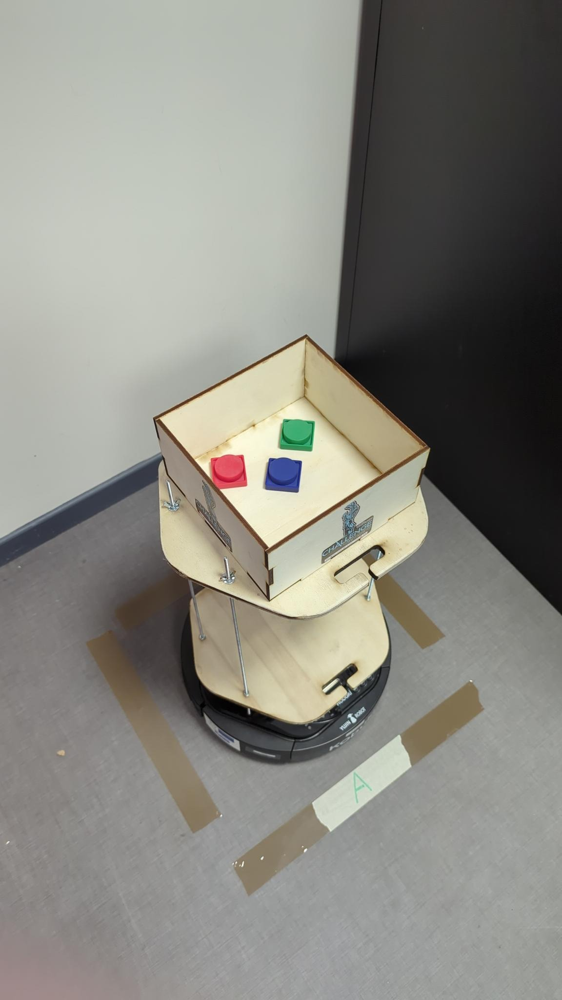
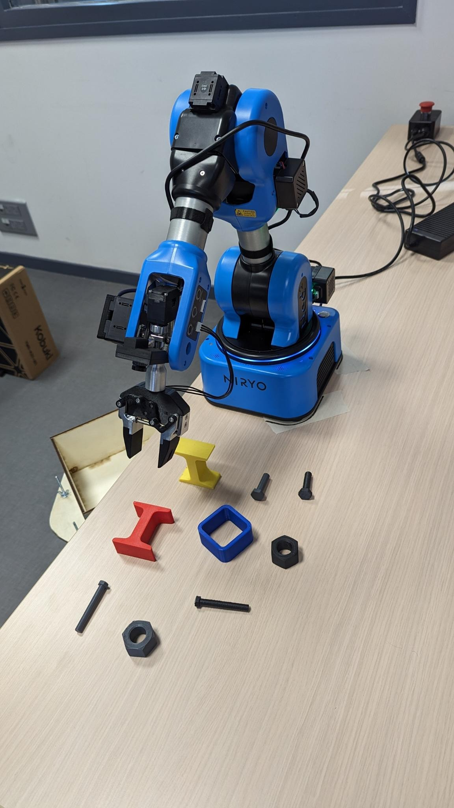
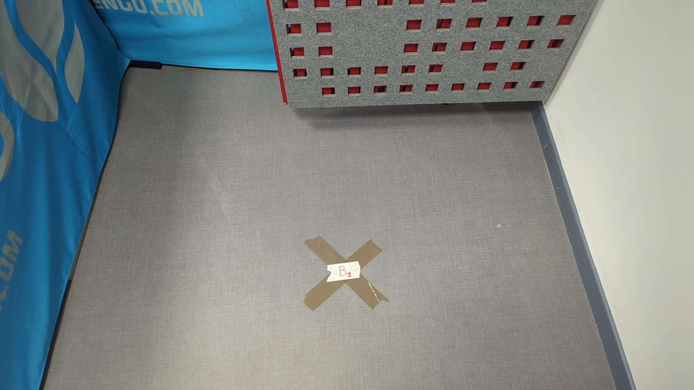
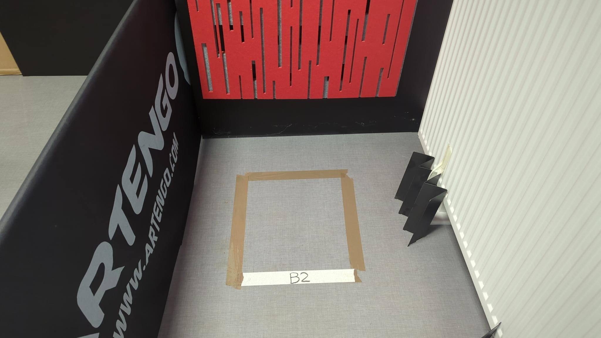
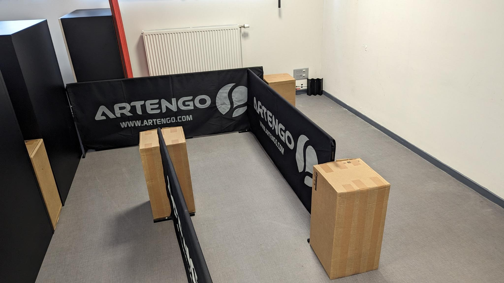

Evaluation
Chaque projet sera évalué par un jury d'enseignants et de professionnels sur la base :
- d'une démonstration réelle en 15 minutes maximum dans un environnement contrôlé (cf. ci-dessous),
- d'un rendu des codes sources et documentations sous licence libre MIT via un répertoire github,
- un pitch final de 5 minutes et 5 minutes de questions
Les attentes des membres du jury sont:
- la mise en place de solutions répondant au challenge de tri automatique de pièces et leur transport,
- différents critères comme l'efficacité, la robustesse et l'originalité de la solution proposée,
- la qualité de la structure logicielle mise en oeuvre,
- la mise en valeur du projet par son équipe de développement notamment lors du pitch final.
Démonstration réelle en environnement contrôlé
L'environnement utilisé pour l'évaluation sera disponible jusqu'à vendredi 12h. Chaque groupe peut donc "entrainer" son robot dans l'arène. Ensuite, chaque groupe disposera d'un créneau de 15 min pour réaliser les deux démonstrations suivantes.
Démo 1
Le pibot est placé au point démarrage noté 0. Le NED2 doit prendre toutes les pièces carrées et rondes depuis la table et les déposer dans le bac de transport fixé sur le pibot. Au départ, toutes les pièces seront à plat et dans le "bon" sens. Elles doivent être correctement empilées par couleur dans le bac du pibot : carré dessous et rond dessus. Les pièces devront être déchargés dans un ordre précis : carré rouge, carré vert, carré bleu, rond bleu, rond vert et rond rouge.

Une fois chargé, le pibot doit se rendre de façon autonome dans la zone de déchargement notée A, attendre 10s et revenir au point de départ 0.

Démo 2
- Prérequis : Démo 1 faite
- Départ/Chargement pibot au point 0
-
Le NED2 devra charger des pièces parmis celles présentes sur la photo en respectant l'ordre suivant :
- toutes les pièces rouges
- toutes les pièces jaunes
- toutes les pièces bleues ou vertes s'il y en a
- tous les petits boulons
- tous les grands boulons
- les autres pièces ne sont pas chargées

-
Le pibot doit ensuite :
- se rendre au point de livraison B1
- attendre 10s
- se rendre au point de livraison B2
- attendre 10s
- retourner au point de départ 0
Attention, pendant son parcours, le pibot pourra rencontrer des osbstacles statiques non présents dans sa carte et des obstacles dynamiques qu'il devra prendre en compte dans sa navigation.



Pitch
Chaque équipe devra présenter son projet en 5 minutes maximum + 5 minutes de questions devant les membres du jury composés des entreprises, des coachs, des organisateurs...